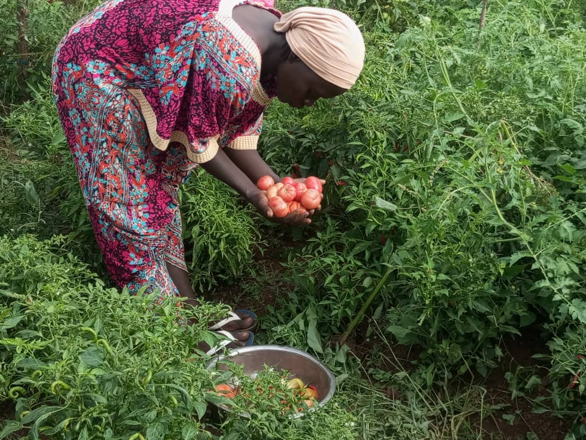

Soybeans
Aggregated from smallholder producers for commodity buyers.
WAV is a market-linkage venture connecting farmers, shea collectors and agro-processors to local and international buyers of agricultural commodities and organic inputs.
WAV works hand in hand with Wuntira Agri Foundation. It links farmers, shea collectors and agro-processors with local and international commodity buyers, with an emphasis on fair trade, transparency, trust and accountability before and after transactions.

WAV connects producers and cooperatives to buyers across a range of crops and inputs.
Aggregated from smallholder producers for commodity buyers.
Sourced through shea collectors and cooperative networks.
Connecting shea products with local and international markets.
A key food commodity traded through producer networks.
Included in WAV's agricultural commodity portfolio.
A staple grain sourced from smallholder farming communities.
Part of the venture's market-linkage offering.
Past trading activity has also included cowpeas and millet.

WAV works with farmer and shea cooperatives to aggregate commodities and connect them to buyers. The wider Wuntira model also links cooperatives to pre-financing and social loan facilities, helping producers access resources and strengthen their businesses.
Discuss a partnership ↗Connect with us to explore market opportunities, programmes and collaboration.